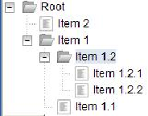
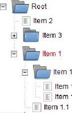

2.3.2 Tree
Like the grid, the tree uses a datastore to store its items
2.3.2.1 Getting Started
To use the tree, you need to import:
import com.objetdirect.tatami.client.tree.Tree;
The tree must be initialized with a root item, either directly in the constructor, or
with the setRootItem method:
Tree tree =
new Tree();
tree.setRootItem(
new Item("Item1","Item1"));
//Or: tree =
new Tree(
new Item("Item1","Item1"));
Two other constructors are available if you do not want to use the default
datastore:
public Tree(AbstractDataStore);
public Tree(Item, AbstractDataStore);
Now, we will see how to populate such a tree:
Tree tree =
new Tree(
new Item("Root","Root"));
Item item1 =
new Item("item1" , "Item␣1");
Item item11 =
new Item("item1.1" , "Item␣1.1");
Item item12 =
new Item("item1.2" , "Item␣1.2");
item1.addChild(item11);
item1.addChild(item12);
item12.addChild(
new Item("item1.2.1" , "Item␣1.2.1"));
item12.addChild(
new Item("item1.2.2" , "Item␣1.2.2"));
tree.getRootItem().addChild(item1);
tree.getRootItem().addChild(item2);
RootPanel.get().add(tree);

2.3.2.2 Customizing the tree display
The tree offers many customization options.

As you can see on the above picture, you can customize the icons used for items,
as well as some css styling on the labels.
Customizing the icons can be done at two levels:
- setting default icons for the whole tree. This can be achieved by using
the following methods. Those methods will take a string as an argument,
which will be used as a css class to apply to the icon node.
-
setDefaultFolderClosedClass(String):
- sets the class applied to a closed
folder icon
-
setDefaultFolderOpenClass(String):
- sets the class applied to an opened
folder icon
-
setDefaultLeafClass(String):
- sets the class applied to a tree leaf icon
The following example show how the icon classes were customized for the
above tree:
tree.setDefaultFolderClosedClass("myTreeClosed");
tree.setDefaultFolderOpenClass("myTreeOpened");
With the myTreeClosed and myTreeOpened class defined like this:
.tundra .myTreeOpened {
background
-image: url(’folder
-open.png’);
background
-position: top;
top: 1px;
height: 32px !important;
width: 32px !important;
}
.tundra .myTreeClosed {
background
-image: url(’folder.png’);
background
-position: top;
top: 1px;
height: 32px !important;
width: 32px !important;
}
You can also customize the css styles applied to the label. As you probably noticed,
item1 is the only one item which label is red-colored.
It has been achieved by using the following method:
item1.setValue(Tree.labelClassAttribute,"myLabelClass");
With the corresponding css class:
.myLabelClass{
color: red;
}
2.3.2.3 Tree events
The Tree accepts tree listeners. A Tree Listener must implement the following
interface:
package com.objetdirect.tatami.client.tree;
import com.objetdirect.tatami.client.data.Item;
public interface TreeListener {
public void onClick(Item item);
public void onOpen(Item item);
public void onClose(Item item);
public void onDblClick(Item item);
}
Then, you can or remove tree listeners to a tree with the following methods:
addTreeListener(TreeListener)
removeTreeListener(TreeListener)
2.3.2.4 Example
The following example illustrates the tree customization and tree listeners
concepts.
FlowPanel panel =
new FlowPanel();
Tree tree =
new Tree(
new Item("Root","Root"));
Item item1 =
new Item("item1" , "Item␣1");
Item item11 =
new Item("item1.1" , "Item␣1.1");
Item item12 =
new Item("item1.2" , "Item␣1.2");
item1.addChild(item11);
item1.addChild(item12);
item12.addChild(
new Item("item1.2.1" , "Item␣1.2.1"));
item12.addChild(
new Item("item1.2.2" , "Item␣1.2.2"));
item1.setValue(Tree.labelClassAttribute,"myLabelClass");
item1.setValue(Tree.folderClosedClassAttribute,"item1");
Item item2 =
new Item("item2" , "Item␣2");
tree.setDefaultFolderClosedClass("myTreeClosed");
tree.setDefaultFolderOpenClass("myTreeOpened");
tree.getRootItem().addChild(item1);
tree.getRootItem().addChild(item2);
final HTML openValue =
new HTML("Opened␣:");
final HTML closedValue =
new HTML("Closed␣:");
final HTML onClickValue =
new HTML("Clicked␣:");
final HTML onDblClickValue =
new HTML("DblClicked␣:");
panel.add(tree);
tree.addTreeListener(
new TreeListener() {
public void onOpen(Item item) {
openValue.setHTML("Opened␣:" + item.getId());
}
public void onClose(Item item) {
closedValue.setHTML("Closed␣:" + item.getId());
}
public void onClick(Item item) {
onClickValue.setHTML("Clicked␣:" + item.getId());
}
public void onDblClick(Item item) {
onDblClickValue.setHTML("DblClicked␣:" + item.getId());
}
});
panel.add(onClickValue);
panel.add(onDblClickValue);
panel.add(closedValue);
panel.add(openValue);